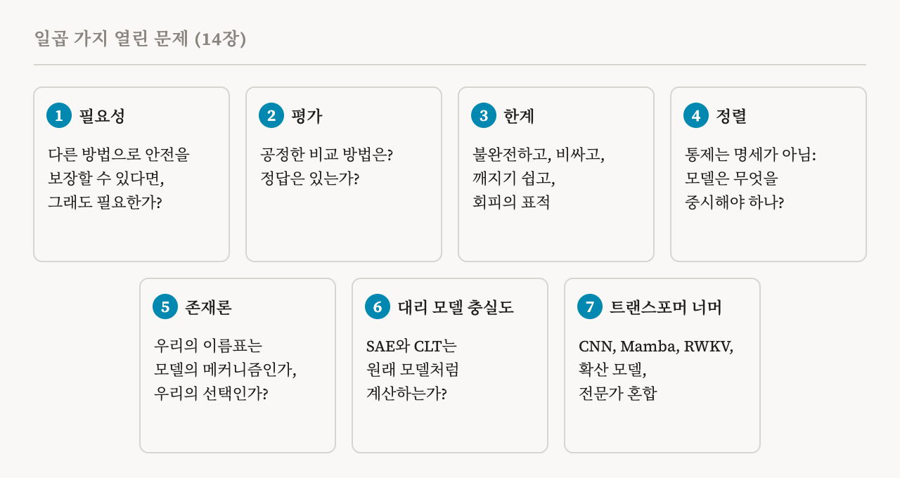
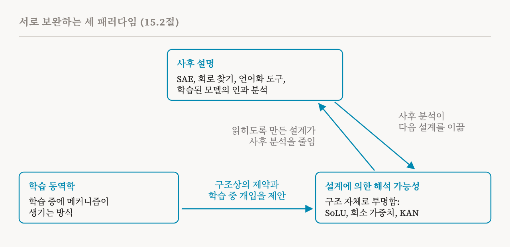

이번 편이 이 연재의 마지막입니다. 이 책의 마지막 두 장, 14장의 열린 문제와 15장의 결론(123–128쪽)을 다룹니다.
일곱 가지 열린 문제
14장은 이 책이 앞으로 이 분야를 이끌 것이라고 보는 개념적 질문들을 정리합니다.

이해는 언제 필요한가
3편에서는 어떤 행동 뒤의 내부 계산을 서술하는 것이 목표일 때처럼, 원리적으로 기계적 이해가 필요한 경우를 다뤘습니다. 이런 필요는 보통 신뢰할 수 있는 AI와 이어지고, 그 뒤에는 직관적인 주장이 있습니다. 사람들은 어떤 시스템이 어떻게 작동하는지 모르고 알 방법도 없으면 그것을 믿지 않을 수 있다는 것입니다. 하지만 우리가 시스템이 안전한지에만 관심이 있고, 기계적 이해 없이도 그것을 보장할 수 있다고 해 봅시다. 그래도 기계적 해석 가능성이 필요할까요?
이 책은 양쪽을 다 보여 줍니다. 2편의 슬리퍼 에이전트는 표준적인 행동 평가에서는 속이는 행동을 숨겼지만 안에는 흔적을 남겼고, 모델의 활성값에 대한 간단한 프로브로 그것을 찾아낼 수 있었습니다. 안을 들여다보는 일의 값어치를 보여 줍니다. 반면 기계적 통찰에서 착안한 접근을 포함한 안전 학습은 배포된 모델이 얼마나 통제 가능하고 잘 정렬되는지를 크게 개선했고, 이제 공격자가 그런 백도어를 심기는 더 어려울 수 있습니다. 시간이 지나면 더 나은 학습이 지금은 직접적인 기계적 조사가 필요한 실패를 고쳐서, 해석 가능성의 필요를 줄일지도 모릅니다. 안전 공동체는 그런 일이 일어날지에 대해 아직 합의하지 못했습니다. 이 책은 가까운 미래에는 기계적 분석이 여전히 없어서는 안 될 것이라고 봅니다. 행동 평가가 놓치는 실패를 진단하고, 안전 행동에 관한 가설을 시험하고, 학습과 배포를 개선하는 통찰을 주기 때문입니다.
방법을 어떻게 평가할 것인가
벤치마크와 평가에 대해 널리 받아들여진 기준이 없고, 방법마다 최적화하는 대상이 다릅니다. 희소 오토인코더 변형들은 재구성, 희소성, 특징 품질로 비교합니다. 회로 찾기 방법들은 범위, 충실성, 효율로 비교합니다. 그래서 보고된 개선을 서로 견주기 어렵습니다. 20편에서 주장을 판단하는 이 책의 다섯 차원을 설명했지만, 그것을 함께 쓰는 벤치마크로 만드는 일은 아직 열려 있습니다. 이 책은 정답 회로가 알려진 합성 과제, 메커니즘이 알려진 장난감 모델, 그리고 사실 떠올리기부터 추론, 안전과 관련된 능력까지 다양한 행동을 다루는 벤치마크 모음을 제안합니다. 더 깊은 질문들도 남아 있습니다. 목표가 다른 방법들을 어떻게 공정하게 비교할지, 기계적 설명에 객관적인 정답이 있기는 한지, 어떤 기준을 먼저 둘지입니다.
불완전하고, 비싸고, 깨지기 쉽고, 표적이 된다
셋째 문제는 네 가지 과제를 묶습니다. 첫째는 불완전성입니다. 많은 행동이 아직 설명되지 않았고, 그래서 아무도 서술하지 않은 메커니즘에 위험하거나 속이는 행동이 숨을 여지가 남습니다. 이것은 근본적인 문제일 수 있습니다. 표현이 여러 구성 요소에 흩어져 있는 저수준의 신경망을 사람이 이해할 수 있는 고수준의 인과 모형으로 옮기면 정보를 잃을 수밖에 없습니다. 그리고 얼마나 잃는지 쉽게 추정할 수도 없습니다. 밑에 있는 계산이 애초에 이해할 수 없는 것이고, 그래서 인과 모형이 필요한 것이기 때문입니다. 둘째는 확장성입니다. 프로브처럼 싸고 비교적 강건한 방법은 거친 이해만 줍니다. 회로 찾기처럼 세밀한 방법은 최전선 모델에서 감당할 수 없는 계산을 요구할 수 있습니다. 이 대가 관계를 푸는 진전은 더딥니다. 셋째는 일반화입니다. 감시 장치와 조종 벡터는 학습 분포 안에서는 잘 작동하다가 입력이 바뀌면 크게 나빠질 수 있습니다. 넷째는 적대적 강건성입니다. 기계적 도구가 배포되거나 공개되면, 충분히 뛰어난 모델은 계산을 여러 구성 요소에 흩어 놓거나, 행동은 같지만 들여다볼 수 없는 회로를 구현하거나, 얽힌 표현 속에 정보를 숨기는 식으로 분석을 피하도록 정보를 담는 법을 배울 수 있습니다. 평가 인식처럼, 이것은 끝이 보이지 않는 해석 가능성 군비 경쟁의 가능성을 엽니다. 이 책의 결론은 기계적 해석 가능성이 AI 안전의 완전한 해법이 되기는 어렵고, 감독, 학습 중 조치, 그리고 더 넓은 정렬 연구와 함께 작동해야 한다는 것입니다.
이해는 정렬이 아니다
기계적 해석 가능성은 조종 벡터, 모델 고치기, 회로 찾기처럼 행동을 통제하는 도구를 줍니다. 하지만 이것들은 모델이 무엇을 중요하게 여겨야 하는지라는 명세 문제를 다루지 않습니다. 거절 회로를 이해하면 감사하고 개입할 수 있지만, 모델의 행동이 사람의 의도를 반영하는지는 알려 주지 않습니다. 지금의 연구는 대체로 둘을 따로 다룹니다. 기계적 방법은 검증과 통제를 돕습니다. 헌법적 AI나 RLHF 같은 접근은 원하는 행동을 명세합니다. 해석 가능성이 이런 접근을 어떻게 보완할 수 있을지는 열린 질문입니다.
해석 대 진실
기술적이면서도 개념적인 근본 질문이 있습니다. 신경망을 기계적으로 이해한다는 것은 무슨 뜻일까요? 어떤 특징을 개의 한 품종 이름을 따서 '보르조이 탐지기'라고 부르거나, 어텐션 헤드를 '이전 토큰 복사기'라고 부르는 것은 어느 정도 주관적일 수 있는 사람의 선택을 반영합니다. 그리고 관찰된 인과 관계와 모두 맞는 여러 메커니즘이 같은 행동을 설명할 수 있습니다. 추상화 수준도 선택입니다. 연구자가 무엇을 중시하느냐에 따라 회로를 어텐션이 정보를 나르는 방식으로 서술할 수도, 저차원 분해로 서술할 수도 있습니다. 2025년의 한 입장 논문은 우리에게 있는 어휘만으로는 AI를 이해할 수 없다고 주장했습니다. 그래서 설명은 직관적이고 관찰에 맞으면서도 내부 계산을 온전히 나타내지 못할 수 있습니다. 이 책은 여러 설명이 맞을 때 한 설명을 얼마나 믿을지, 그리고 유일한 기계적 서술을 기대해야 하는지 아니면 타당한 서술 여럿을 받아들여야 하는지를 열린 질문으로 남깁니다.
대리 모델은 모델처럼 계산하는가
최근 연구의 상당수는 대리 모델을 연구합니다. 희소 오토인코더나 교차 층 트랜스코더처럼 대상 모델의 계산을 근사하는, 더 해석하기 쉬운 모델입니다. 이것은 분석에 큰 도움이 되었지만, 새로운 문제를 불러옵니다. 두 신경망은 서로 다른 내부 알고리즘으로 같은 출력을 낼 수 있으므로, 대리 모델에는 원래 모델에 없는 특징과 회로가 들어 있을 수 있습니다. 이것은 안전에 중요합니다. 연구자가 대리 모델에서 '속임수 회로'를 찾지 못했다고 해서 대상 모델이 안전하다고 결론지을 수는 없습니다. 말할 수 있는 것은 대리 모델에서 속임수 메커니즘을 찾지 못했다는 것뿐이고, 이것은 쓸모 있는 보장과는 거리가 멉니다. 이 책은 두 방향을 가리킵니다. 18편의 인과적 추상화에서 온 교환 개입 시험과 학습은 대리 모델과 그 회로를 대상 모델의 인과적 추상화로 보고, 메커니즘이 맞아떨어지는지 시험하는 데에도, 더 충실한 대리 모델을 학습시키는 목표로도 쓸 수 있습니다. 그리고 이론적으로, 주어진 재구성 수준에서 대리 모델의 내부 계산이 대상 모델과 얼마나 다를 수 있는지 상한을 정할 수 있을지도 모릅니다.
트랜스포머 너머
이 책의 방법은 거의 모두 트랜스포머 언어 모델에서 개발되었습니다. 31편의 방향들은 목표로 보면 대체로 구조와 상관없지만, 그 방법들은 그렇지 않습니다. 회로 연구는 합성곱 비전 신경망에서 시작했지만, 오늘날의 특징 추출, 모델 고치기, 회로 찾기는 트랜스포머의 잔차 스트림, MLP, 어텐션을 위해 만들어졌습니다. 이 책은 옮겨 가지 않을 수 있는 것들을 살펴봅니다. 합성곱 신경망은 합성곱 층과 풀링 층으로 이루어집니다. 현대의 합성곱 신경망에서 중첩과 회로를 대규모로 연구한 것은 많지 않습니다. Mamba나 RWKV 같은 상태 공간 모델과 순환 모델은 시간에 따라 숨은 상태를 갱신하므로, 그 안에 정보가 어떻게 저장되고 갱신되는지에 대한 새로운 질문을 던집니다. 확산 모델은 잡음을 거듭 걷어 내는 방식으로, 흔히 여러 토큰을 한꺼번에 생성하므로, 다음에 예측한 토큰을 모델의 행동으로 읽는 습관이 더 이상 통하지 않습니다. 그리고 이제 흔해진 전문가 혼합 층은 각 입력을 여러 작은 MLP 가운데 몇 개로 보냅니다. 그중 하나를 패칭하면 뒤쪽에서 어떤 전문가가 골라지는지가 바뀔 수 있고, 층마다 8개에서 256개 이상에 이르는 전문가 경로의 수가 회로 찾기를 훨씬 어렵게 만듭니다. 한편 조종 벡터, 튜닝된 렌즈, 지식 고치기, 회로 평가는 성공의 정도는 다르지만 Mamba, RWKV, 시각-언어 모델로 옮겨졌고, 트랜스포머에서 얻은 몇몇 발견이 신경망의 더 일반적인 성질을 반영한다는 이론도 있습니다. 어떤 발견이 구조에 달려 있는지 가려내는 것이 유망한 연구 방향입니다.
성과와 한계
결론인 15장은 처음으로 돌아갑니다. 신경망은 인류가 만든 것 가운데 가장 중대한 결과를 낳을 인공물일 수 있지만, 우리는 그것이 어떻게 작동하는지 이해하지 못하고 그것이 하는 일을 믿을 만하게 통제하지도 못합니다. 능력은 기하급수적으로 나아졌지만 내부 메커니즘을 설명하는 방법은 뒤처졌고, 1편에서 설명한 해석 가능성의 틈이 벌어졌습니다. 이 분야는 하나의 접근으로 모이지 않았습니다. 31편의 여섯 방향으로 갈라졌고, 각각 완전성, 비용, 적용 가능성 사이에서 대가를 치릅니다.
이 책은 실제 진전을 인정합니다. 희소 오토인코더로 해석 가능한 특징을 뽑아내고, 과제에 필요한 회로를 찾고, 행동에 겨냥한 개입을 하는 일입니다. 이 모두가 연구자들이 모델 안의 계산, 표현, 인과 구조를 보는 방식을 빚었습니다. 그리고 한계도 분명히 말합니다. 지금의 방법은 많은 행동을 온전히 설명하지 못하고, 분포 이동에서 힘을 잃고, 얽힌 계산을 깔끔하게 떼어 내기 어려워하고, 최전선 모델로 규모를 키우기 어렵습니다. 가장 중요한 것은, 그것이 안전에 얼마나 쓸모 있는지가 아직 논쟁 중이라는 점입니다. 이전 연구의 상당수는 기계적 이해가 곧바로 시스템을 더 안전하게 만든다고 가정했지만, 이 책은 그 가정이 대체로 검증되지 않았다고 지적합니다. 그래서 이 책은 내내 어떤 방법이 무엇을 보여 주는지만이 아니라, 그것으로 무엇을 할 수 있는지, 그리고 같은 안전 업무를 그 방법 없이도 그만큼 잘할 수 있는지를 물었습니다. 이 책은 평가 방법론과 안전 벤치마크를 이 분야의 가장 시급한 열린 문제로 꼽고, 37편의 결론을 되풀이합니다. 해석 가능성은 독립적인 보증이 아니라 다층 방어의 한 부분입니다.
앞으로의 길
앞을 내다보며, 이 책은 이 분야를 서로 보완하는 세 패러다임으로 묶습니다.

첫째는 사후 설명입니다. 희소 오토인코더, 회로 찾기, 활성값 언어화 도구, 인과 분석 같은 도구로 학습된 모델을 연구합니다. 배포된 시스템은 여전히 설계부터 해석 가능하지는 않은 보통의 조밀한 구조를 쓰므로, 이 패러다임은 한동안 중요하게 남을 것입니다. 둘째는 26편부터 28편에서 본 학습 동역학 연구입니다. 학습하는 동안 메커니즘이 어떻게 생기는지 이해해서, 일찍 예측하고 개입할 수 있게 합니다. 셋째는 15편에서 본 설계에 의한 해석 가능성입니다. SoLU, 가중치가 희소한 트랜스포머, KAN처럼 구조 자체로 투명한 모델을 만들어서, 해석 가능성을 상류로 옮깁니다. 셋은 서로를 돕습니다. 읽히도록 만든 설계는 사후 분석의 필요를 줄입니다. 사후 분석은 다음 설계를 이끌 수 있습니다. 학습 동역학에 대한 통찰은 구조상의 제약과 학습 중 개입을 제안합니다.
진전은 더 엄격한 과학적 기준에도 달려 있습니다. 해석 가능성은 반증 가능하고 재현 가능한 주장을 내놓아야 하고, 모델 평가와 실제 응용에 더 많이 쓰여야 합니다. 그리고 이 책은 그 전체를 이끈 질문으로 끝납니다. 모델이 어떻게 작동하는지 이해하면, 정말로 모델이 더 안전해질까요? 이 책은 부분적이거나 잘못된 인과적 이해의 한계를 인정하면서, 이 접근들이 어떻게 함께 작동해 이해와 안전장치를 모두 개선할 수 있는지 보이는 것이 자신의 목표였다고 말합니다.
여기서부터는
이것으로 이 책도, 이 연재도 끝납니다. 서른여덟 편은 왜 모델 안을 들여다보는지에서 출발해, 해석 가능성이 연구하는 가설, 특징, 회로, 표현을 지나, 학습, 연구 방향, 안전까지 이 책을 따라왔습니다. 더 나아가고 싶은 독자에게 가장 좋은 다음 걸음은 이 책 자체와, 여기서 설명한 많은 방법을 작은 공개 모델에서 직접 실행해 볼 수 있는 실습 노트북입니다.
| 문제 | 질문 |
|---|---|
| 필요성 | 다른 방법으로 안전을 보장할 수 있다면, 그래도 메커니즘이 필요한가? |
| 평가 | 목표가 다른 방법을 어떻게 공정하게 비교하고, 정답은 있는가? |
| 불완전성과 강건성 | 설명은 얼마나 빠뜨리고, 모델은 설명을 피하는 법을 배울 수 있는가? |
| 정렬 | 이해가 모델이 무엇을 중요하게 여겨야 하는지 정하는 데 어떻게 도움이 되는가? |
| 존재론 | 우리의 서술은 모델의 메커니즘인가, 우리의 선택인가? |
| 대리 모델의 충실도 | 희소 오토인코더와 트랜스코더는 모델과 같은 방식으로 계산하는가? |
| 옮겨 가기 | 이 방법들이 트랜스포머 너머에서도 통하는가? |
| 용어 | 뜻 |
|---|---|
| 명세 문제 | 모델이 무엇을 중요하게 여기고 무엇을 목표로 해야 하는지 정하는 문제 |
| 헌법적 AI | 문서로 적어 둔 원칙들에 비추어 모델을 학습시키는 방법 |
| 존재론의 질문 | 메커니즘에 대한 서술이 참이라는 것이 무슨 뜻인지에 대한 질문 |
| 추상화 수준 | 계산을 얼마나 거칠게, 또는 세밀하게 서술하는지 |
| 대리 모델 | 희소 오토인코더나 CLT처럼 대상 모델을 근사하는 해석하기 쉬운 모델 |
| 대리 모델의 충실도 | 대리 모델이 원래 모델과 같은 방식으로 계산하는지 |
| 상태 공간 모델 | Mamba처럼 읽어 나가며 숨은 상태를 갱신하는 모델 |
| 전문가 혼합 | 각 입력을 여러 작은 MLP 가운데 몇 개로 보내는 층 |
| 사후 설명 | 학습이 끝난 모델의 내부를 연구하는 것 |
| 설계에 의한 해석 가능성 | 구조 자체로 투명한 모델을 만드는 것 |
| 반증 가능 | 증거로 틀렸음을 보일 수 있도록 서술된 것 |